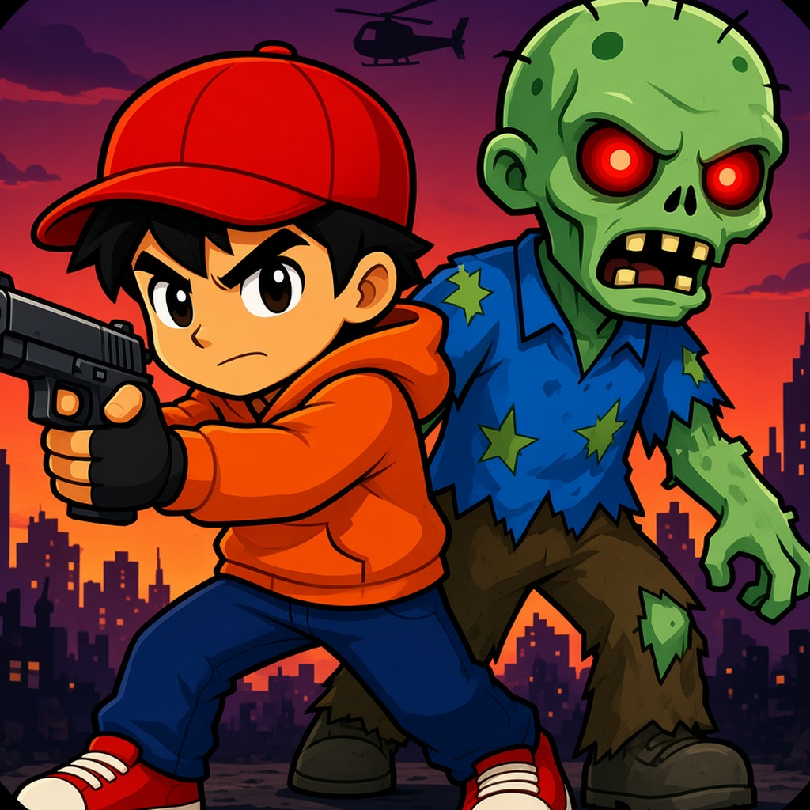

Support
Last Exit · iOS
Hilfe & Kontakt
Fragen, Fehler oder Ideen? Schreib uns über GitHub Issues – wir antworten so schnell wie möglich.
Häufige Fragen
Wie steuere ich? Finger auf den Bildschirm legen und ziehen. Waffen feuern automatisch. Der runde Knopf unten rechts löst das Ultimate aus.
Brauche ich Internet? Nein, Last Exit läuft komplett offline.
Mein Spielstand ist weg. Der Spielstand liegt nur auf deinem Gerät. Beim Löschen der App wird er entfernt.
Gibt es Käufe? In Version 1.0 gibt es keine Käufe mit echtem Geld.